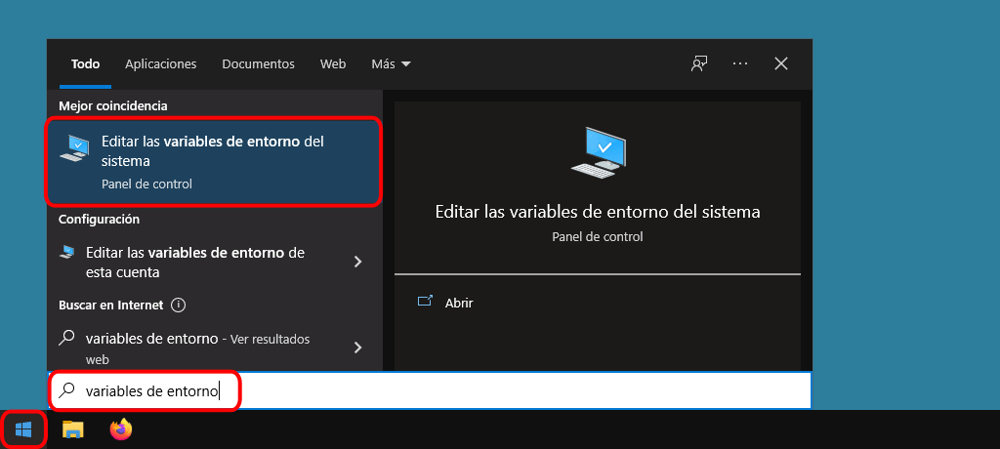
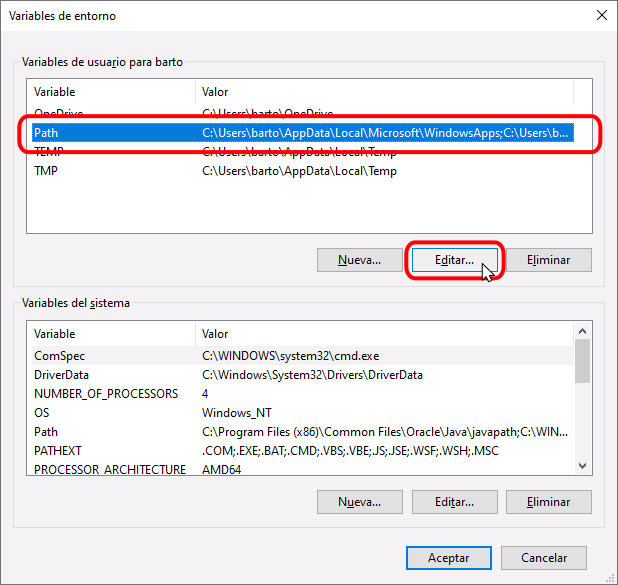
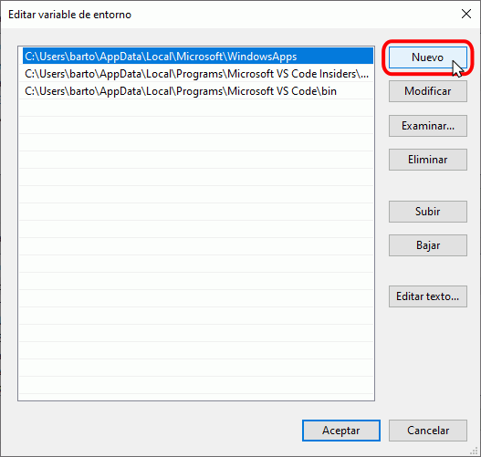
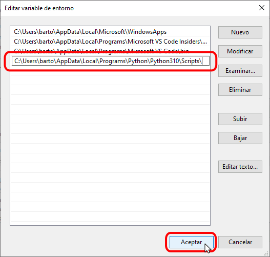

MPTC en Windows
Estos son los pasos a realizar para instalar Mclibre Python Testing Client en Windows, como módulo de sistema o en un entorno virtual venv.
MPTC como módulo de sistema en Windows
Estos son los pasos a realizar para instalar, actualizar, usar y desinstalar Mclibre Python Testing Client en Windows como módulo de sistema.
Instalar MPTC como módulo de sistema en Windows
Los pasos para instalar Mclibre Python Testing Client como módulo de sistema en Windows son los siguientes:
- Abra una ventana de terminal y escriba los siguientes comandos.
- Actualice pip:
pip install --upgrade pipNota: A veces el comando anterior no actualiza pip y en su lugar se debe utilizar el comando:
python -m pip install --upgrade pip - Instale PyTest:
pip install pytest - Instale Requests:
pip install requests - Instale mclibre Python Testing Client:
pip install mclibre-python-testing-client
Usar MPTC como módulo de sistema en Windows
Los pasos para usar Mclibre Python Testing Client en Windows son los siguientes:
- Cree un programa que resuelva uno de los ejercicios (en este ejemplo el programa se llama programa.py).
- Si ha instalado correctamente Mclibre Python Testing Client, dispondrá de un nuevo comando llamado mptc. La sintaxis del comando requiere el nombre del programa a probar y el identificador del enunciado del ejercicio:
mptc programa.py 1
Problemas en la instalación/ejecución de MPTC
En algunos casos y por motivos que actualmente (marzo de 2022) no he identificado, al instalar MPTC se puede obtener un mensaje similar a este:
...
Installing collected packages: mclibre-python-testing-client
WARNING: The script mptc.exe is installed in 'C:\Users\XXXX\AppData\Local\Packages\PythonSoftwareFoundation.Python.
310_XXXXX\LocalCache\local-packages\Python310\Scripts' which is not on PATH.
Consider adding this directory to PATH or, if you prefer to suppress this warning, use --no-warn-script-location.
En ese caso, al intentar ejecutar MPTC se mostrará un mensaje de error:
C:\Users\XXXX\Documents\LMSGI\Python\pruebas>mptc prueba.py 1
"mptc" no se reconoce como un comando interno o externo,
programa o archivo por lotes ejecutable.
Nota: Las rutas que pueden verse en estos mensajes pueden ser ligeramente distintas a la del ejemplo anterior (por ejemplo, C:\Users\XXXX\AppData\Local\Programs\Python\Python310\Scripts\ o C:\Users\XXXX\AppData\Local\packages\LocalCache\local-packages\Python310\Scripts\).
Para resolver este problema, pruebe primero a reparar la instalación de Python, tal y como se comenta en la lección Instalación de Python (compruebe en concreto que esté marcada la casilla "Add Python to environment variables" en la pantalla "Advanced Options").
En caso de que la reparación de la instalación de Python no resuelva el problema, añada manualmente la ruta indicada al PATH de Windows, ejecutando los pasos siguientes:
- Haga clic en Inicio, escriba variables de entorno y haga clic en alguno de los accesos directos a "Editar las variables de entorno del sistema".

- Se abrirá la ventana de "Propiedades del sistema". En la pestaña "Opciones avanzadas", haga clic en "Variables de entorno":

- Se abrirá la ventana "Variables de entorno". Haga clic en la variable de entorno "Path" y haga clic en "Editar...":

- Se abrirá la ventana "Editar variables de entorno". Para incluir la ruta, haga clic en "Nuevo":

- Se mostrará el curso en una fila vacía de la tabla:

- Pegue en ella la ruta y haga clic en "Aceptar":

- Reinicie Windows y compruebe que MPTC funciona.
Actualizar MPTC como módulo de sistema en Windows
Los pasos para actualizar Mclibre Python Testing Client como módulo de sistema en Windows son los siguientes:
- Abra una ventana de terminal y escriba los siguientes comandos.
- Actualice mclibre Python Testing Client:
pip install --upgrade mclibre-python-testing-client
Desinstalar MPTC como módulo de sistema en Windows
Para desinstalar Mclibre Python Testing Client en Windows:
- Desinstale mclibre Python Testing Client:
pip uninstall mclibre-python-testing-clientPara volver a utilizar Mclibre Python Testing Client en este entorno, deberá volver a instalarlo.
MPTC en entorno virtual venv en Windows
Estos son los pasos a realizar para instalar, usar y desinstalar Mclibre Python Testing Client en Windows utilizando el módulo de la biblioteca estándar de Python venv.
Instalar MPTC en entorno virtual venv en Windows
Los pasos para instalar Mclibre Python Testing Client en Windows utilizando el módulo de la biblioteca estándar de Python venv son los siguientes:
- Abra una ventana de terminal.
- Cree un entorno virtual de Python en un directorio (en el ejemplo, el directorio se llama venv-dir):
python -m venv venv-dir - Active el entorno:
"venv-dir/Scripts/activate" - Mientras el entorno esté activo, se mostrará el nombre del entorno al principio del prompt:
- Actualice pip:
pip install --upgrade pip - Instale PyTest:
pip install pytest - Instale Requests:
pip install requests - Instale mclibre Python Testing Client:
pip install mclibre-python-testing-client
Usar MPTC en entorno virtual venv en Windows
Los pasos para usar Mclibre Python Testing Client en Windows utilizando el módulo de la biblioteca estándar de Python venv son los siguientes:
- Cree un programa que resuelva uno de los ejercicios (en este ejemplo el programa se llama programa.py).
- Si ha instalado correctamente Mclibre Python Testing Client en el entorno virtual, dispondrá de un nuevo comando llamado mptc. La sintaxis del comando requiere el nombre del programa a probar y el identificador del enunciado del ejercicio:
mptc programa.py 1
Actualizar MPTC en entorno virtual venv en Windows
Los pasos para actualizar Mclibre Python Testing Client en Windows utilizando el módulo de la biblioteca estándar de Python venv son los siguientes:
- Abra una ventana de terminal y escriba los siguientes comandos.
- Actualice mclibre Python Testing Client:
pip install --upgrade mclibre-python-testing-client
Desinstalar MPTC en entorno virtual venv en Windows
Los pasos para desinstalar Mclibre Python Testing Client en Windows utilizando el módulo de la biblioteca estándar de Python venv son los siguientes:
- Si simplemente quiere salir del entorno virtual de Python, escriba:
deactivateEn este caso, puede volver a entrar en el entorno en cualquier momento activando de nuevo el entorno:
"venv-dir/Scripts/activate" - Si simplemente quiere desinstalar Mclibre Python Testing Client, escriba:
pip uninstall mclibre-python-testing-clientEn este caso, conservará el entorno virtual. Para volver a utilizar Mclibre Python Testing Client en este entorno, deberá volver a instalarlo.
- Si quiere eliminar completamente el entorno virtual, simplemente borre el directorio (con el explorador de Windows o con el comando):
rmdir /S venv-dirEn este caso, para volver a utilizar Mclibre Python Testing Client, deberá volver a crear un entorno virtual e instalarlo.